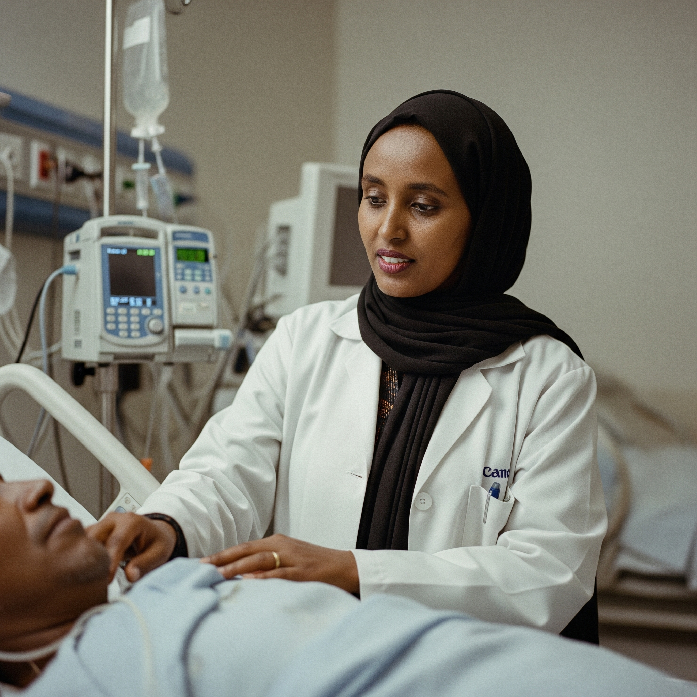

Comprehensive Medical Services
Your health is our priority. At Ras Desta Damtew Memorial Hospital, you will find a comprehensive range of medical and surgical services delivered by a team of highly skilled and compassionate experts.
Medical Departments & Specialties
- Anaesthesia
- General Surgery
- Ophthalmology
- Internal Medicine
- Pediatrics and Child Health
- Obstetrics & Gynecology
- Orthopedics
- Dermatology
- Radiology and Medical Imaging
- Emergency Medicine
- Dentistry and Oral Health
- Labratory and Diagnostics
Our Expertise in Key Services
Ophthalmology
Our Ophthalmology department is a center of excellence for eye care in the region. We provide comprehensive services for a wide spectrum of eye conditions, with a special focus on the diagnosis and management of glaucoma and other prevalent diseases.
General Surgery
The Department of Surgery is equipped to handle a diverse range of surgical needs. Our experienced surgeons are committed to patient safety and employ modern surgical techniques to ensure optimal outcomes.
Anaesthesia
Our Anaesthesia department is fundamental to our surgical services. Staffed by skilled professionals, the department provides expert anesthetic care, ensuring patient comfort and safety during medical procedures.
Labratory and Diagnostics
lallllllllllllllllllllllllllllllllllllllllllllllllllllll